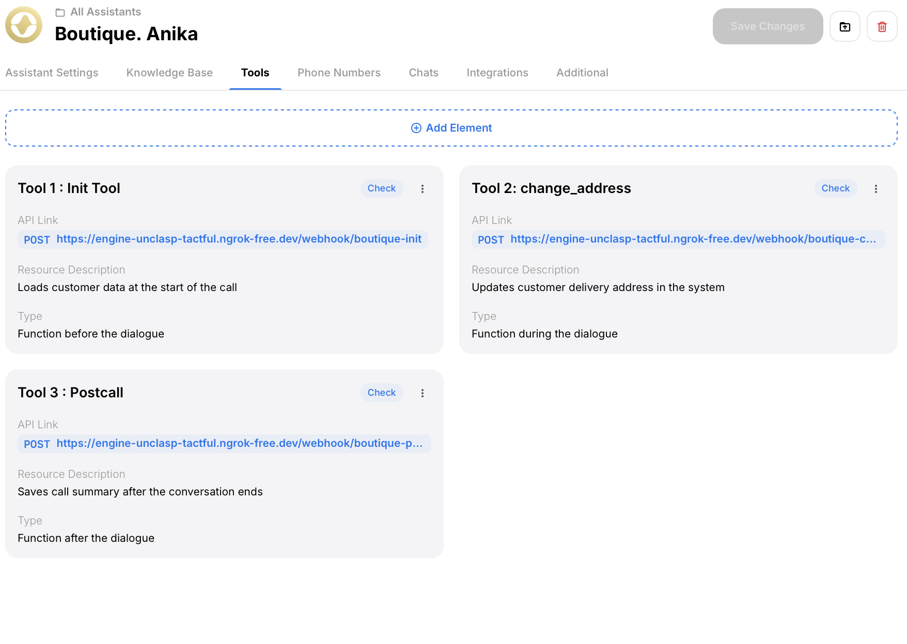
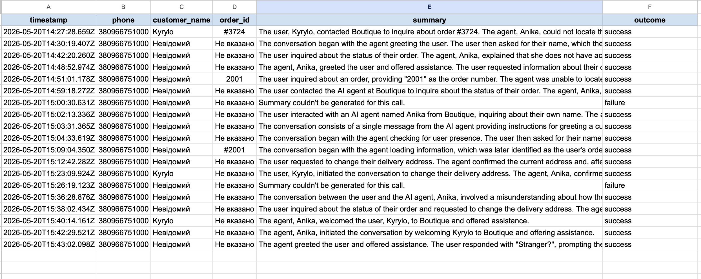
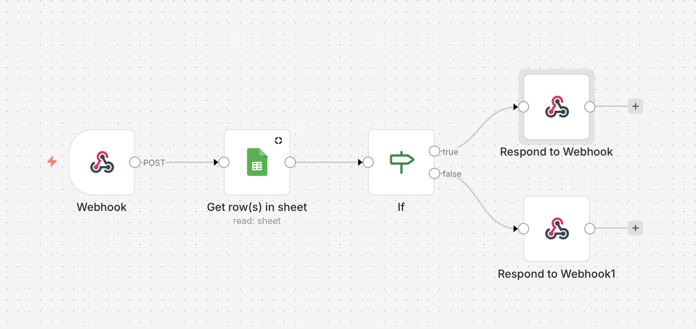
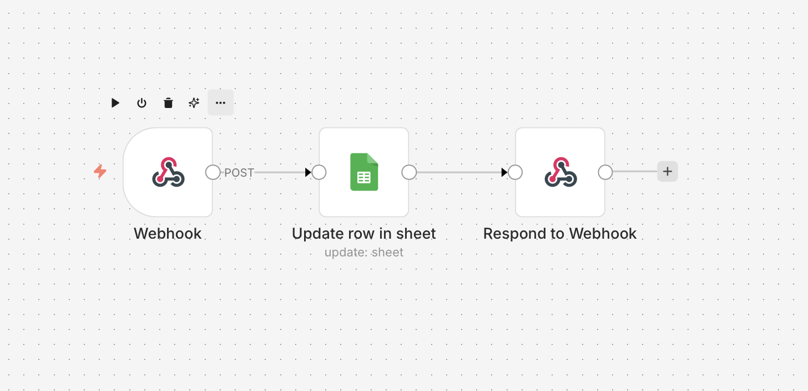
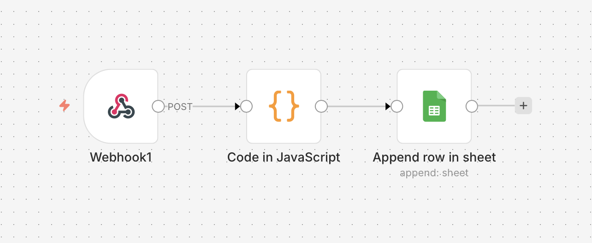

Project Summary
| Client | Clothing retail store (Boutique) |
|---|---|
| Type | Voice AI Automation |
| Stack | Happ.tools · n8n · Google Sheets · SIP |
| Status | ✅ Live and tested |
| GitHub | Voice-AI-Agent-for-Retail-Boutique |
The Problem
The store receives dozens of calls daily:
- “What’s my order status?”
- “Can I change my delivery address?”
- “How much does shipping cost?”
One manager can’t handle all calls in time. Customers wait on hold or don’t get answers. The team spends hours on repetitive questions instead of complex tasks.
The Solution
A Voice AI Agent named Anika that:
→ Picks up every inbound call instantly
→ Identifies the customer by phone number
→ Greets them by name with their order details
→ Answers typical questions autonomously
→ Updates delivery address in real time
→ Logs a full call summary after every conversation
Architecture
📞 Incoming Call (SIP/Zadarma)
↓
🎙️ Happ.tools - Voice Agent "Anika"
↓
⚡ n8n - Workflow Automation (3 webhooks)
↓
📊 Google Sheets - Orders + Call Log3 Automated Integrations
Before the call - Init Tool
- Receives caller phone number
- Looks up customer in Google Sheets
- Returns: name, order ID, status, delivery address
- Agent greets customer by name within seconds
During the call - Change Address
- Customer says new address
- n8n updates the row in Google Sheets instantly
- Agent confirms the change
After the call - Postcall
- Happ.tools sends full call data to n8n
- Code node extracts customer name and order ID
- New row appended to Call Log automatically
Tech Stack
| Tool | Role |
|---|---|
| Happ.tools | Voice AI platform, SIP integration |
| n8n | Webhook automation, data processing |
| Google Sheets | Customer database + call log |
| Zadarma | SIP telephony |
| ngrok | Webhook tunneling (development) |
Test Results - 10 Scenarios
| # | Scenario | Result |
|---|---|---|
| 1 | Known customer asks order status | ✅ Greeted by name, correct status given |
| 2 | Known customer changes address | ✅ Old address confirmed, new address saved |
| 3 | Unknown number calls | ✅ Generic greeting, no crash |
| 4 | Customer asks delivery cost | ✅ Correct answer from Knowledge Base |
| 5 | Customer asks return policy | ✅ Correct answer from Knowledge Base |
| 6 | Angry customer | ✅ Calm response, human handoff offered |
| 7 | Out-of-scope question | ✅ Redirected to manager |
| 8 | Order not found | ✅ Informed customer, offered manager |
| 9 | Customer asks about sizes | ✅ Correct answer from Knowledge Base |
| 10 | Normal call ends | ✅ Postcall fired, Call Log updated |
Metrics
| Metric | Value |
|---|---|
| Call Success Rate | 100% |
| Human Handoff Rate | 30% (edge cases only) |
| Knowledge Base Accuracy | 100% |
| Postcall Logging Rate | 100% |
| Avg Call Duration | ~60 sec |
| Time saved per call | ~3-5 min |
Key Challenges & Solutions
1. Phone number format mismatch
Problem: Google Sheets drops + from phone numbers stored as numbers.
Solution: Strip + in n8n filter expression before lookup. Store phones as plain text.
2. Unknown caller crashing the agent
Problem: When phone not in sheet, Google Sheets returns empty → n8n stops → agent freezes.
Solution: Always Output Data setting + IF node returns empty JSON fallback so agent always gets a valid response.
3. Variable injection syntax
Problem: Initial [customer_name] syntax was read literally by the agent.
Solution: Happ.tools uses {{variable}} syntax. Updated all prompt references.
4. Init Tool loading delay
Problem: 3-4 second silence at call start while webhook loads.
Solution: Added First Message “Один момент…” + increased silence timeout to 15 seconds.
5. Postcall field extraction
Problem: Happ.tools sends call data in deeply nested JSON. LLM-generated fields were unreliable.
Solution: Built Code node in n8n using regex to extract order_id and customer_name from transcript summary.
Prompt Engineering - Before vs After
Before
"Вітаємо в Boutique! Мене звати Аніка.
Я бачу, що вам телефонує [customer_name]. Чим можу допомогти?"❌ Wrong variable syntax - agent said “[customer_name]” literally
❌ No fallback for unknown callers
❌ No postcall instructions
After
If {{customer_name}} is available:
"Вітаємо в Boutique! Мене звати Аніка.
З вами говорить {{customer_name}}? Ваше замовлення {{order_id}}
має статус {{order_status}}. Чим можу допомогти?"
If {{customer_name}} is NOT available:
"Вітаємо в Boutique! Мене звати Аніка. Чим можу допомогти?"✅ Correct variable syntax
✅ Fallback for unknown callers
✅ Postcall instructions added
✅ Language rules added
Business Impact
Before automation:
- 1 manager handles all calls
- Average wait time: 2-5 minutes
- Missed calls during peak hours
- No call logging
After automation:
- Agent picks up instantly, 24/7
- 70% of calls resolved without human
- Every call logged automatically
- Manager handles complex cases only
Next Steps
- Replace Google Sheets with KeyCRM API
- Add SMS confirmation after address change
- Outbound calls for order confirmations
- Multilingual support (UA / EN)
- Reduce Init Tool latency to under 1 second
- Analytics dashboard on call outcomes
Screenshots




